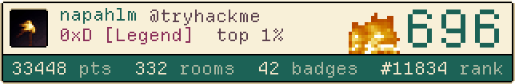

<!-- thm-badge-generator: paste into your README. Light/dark follow the viewer's GitHub theme. -->
<a href="https://tryhackme.com/p/napahlm">
  <picture>
    <source media="(prefers-color-scheme: dark)" srcset="thm-adventure-dark.gif">
    
  </picture>
</a>
